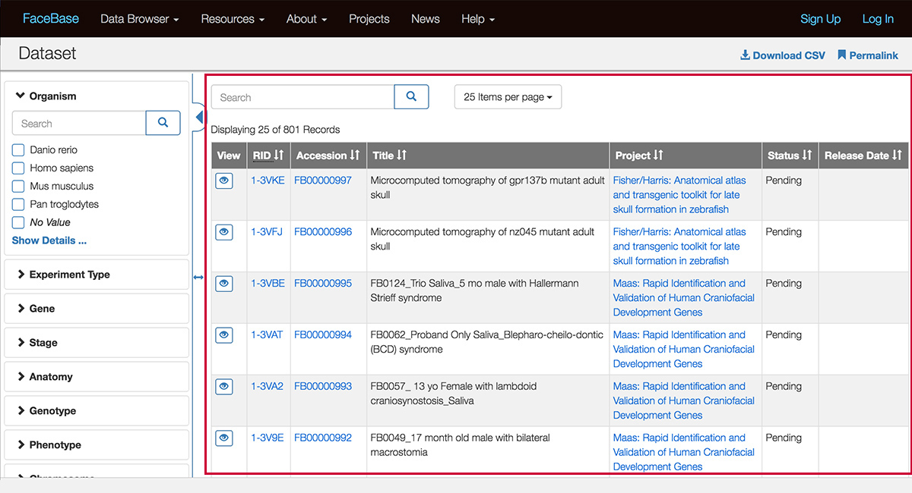
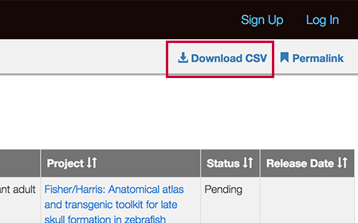

Using the Chaise Data Browser¶
Chaise, sometimes referred to as the "Data Browser", serves the user interface for the data portal and provides views of the data based on the underlying data model and annotations. (For those with data submitter or adminstrator roles, you can learn how to manage the model and annotations in Managing Catalogs.)
The Chaise interfaces represent data via records that can be filtered with attributes in the sidebar much like you would in an online shopping site.
Note
The Chaise Data Browser is configured for a particular deployment. We'll be using screenshots from some current deployments to illustrate the common elements, but the actual data, columns and attributes displayed vary per context, domain, model, etc.
Example of a landing page¶
Above is a typical example using Facebase (facebase.org). Common elements are:
- Filtering sidebar
- Search bar above the results
- Search results based on filters.
Filtering sidebar¶
The filtering sidebar is a configurable set of "facets", in this example, common elements of biomedical data of test specimen: organism, age stage, anatomy, etc. Within each facet are a set of attributes that are represented in the data.
Selecting and de-selecting attributes in any of the facets will filter the results to show data with those attributes.
The above screenshot shows that when you select the "Homo Sapiens" attribute from the "Organism" filter, the number of records shown changes from 801 records to 52 records of human datasets.
For filters with a long list of attributes, you can use the small search box within the filter to search across those attributes. You can also click "Show Details" to pull up a modal window to access all of the attributes.
Search results view¶

The search results, in the main body of the page (outlined in red above), can be configured for which columns are shown in which order. Column headers are sortable.

You can download a CSV file of the results by clicking the Download link.
Note the larger search field above the search results. Enter a keyword to search across text in all of the visible columns.
Clicking the View (eye) icon takes you to the "record" page which displays the metadata and links to the data files for that particular record.
Record page¶
The following screenshots show an example record page from the GUDMAP/RBK data browser:
The record starts with the related metadata, configured in (where is this configured?).
Note
In this particular deployment, the metadata "tags" are in turn filtered links - ie, if you click the tag link "genitourinary system" in "Specimen Tissue", you would see a list of all relevant data with that attribute.
To the right is a "Contents" sidebar that links to the various types of content available for the record and their count.
In this record, we see it starts with "Main" (the metadata at the top of the page), three instances of "Images", four of "Specimen Expression", a "Specimen Probe" and a "Genes" record.
Clicking any of those links, for example "Images (3)"...

will take you directly to that section of the page.